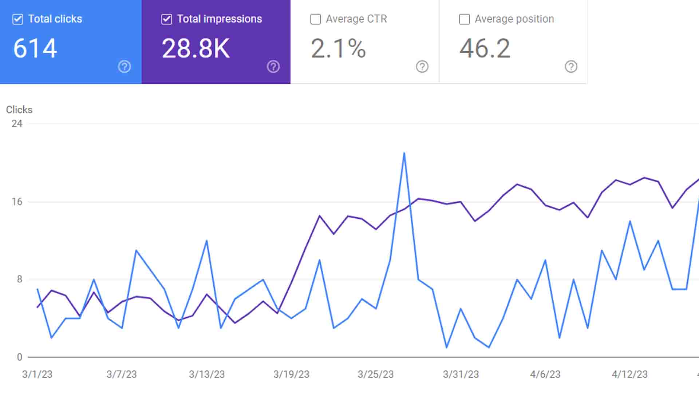

There's been a tangible shift from traditional advertising to content-driven experiences. Consumers crave unique content that resonates with them and sets their soul on fire.
I'll try my hardest to do just that. Got your coffee? And your fire extinguisher?
1. Content Marketing is Evolving Consumer Behavior
I have an eternal disdain for ads, except recently I've actually gotten a laugh out of a few (Liberty biberty, Mayhem, etc.). If you know, you know.
The shift to value-based content has necessitated a new approach to marketing - one that focuses on providing valuable and relevant content to engage consumers and build lasting relationships.
I know from personal experience that I actively seek out content that educates, entertains, and informs. Instead of relying solely on advertising messages, we consumers are drawn to brands that provide meaningful experiences through high-quality and well-thought-out content.
Consumers are becoming increasingly keen to ignoring or blocking out interruptive and irrelevant ads, leading to a decline in their effectiveness.
Recently, the landscape has gone from interruptive advertising to content and value-driven experiences catered toward an audience.
2. Personalized Content
We now have higher expectations for the things we're consuming. To meet these expectations, brands must create content that is informative, entertaining, and tailored to their target audience's preferences.
When storytelling and personalization are combined, brands can create highly engaging and tailored experiences. Think deeply: how can your message relate to the human on the other side of the screen?
By crafting narratives that align with the values, aspirations, and challenges of your target audience, we establish a deeper connection and build trust.
The power of creating a target persona, and marketing to that fictional character can get your conversion rates touching the stratosphere.
3. Multi-channel Content & Measurement
Utilize various channels to distribute your content and connect with consumers where they are most active.
For example, if you're making a massive 6000 word blog post, create a plan where you can make a quick few Instagram reels, a Tweet thread, etc. If you're not already repurposing content, start now.
You already did the work and came up with the content. It'd be misuse of your time if it only went into the blog post. Diversify and dominate ladies & gents.
Find platforms and channels that align with your target audience's preferences and behaviors. The possibilities are endless on YouTube, Facebook, LinkedIn, & about a hundred more.
Try dipping your toes into these short-form content algorithms. The amount of fresh exposure you get to strangers is not to be taken lightly.
Establishing Key Performance Indicators (KPIs) for Content Marketing
KPIs are specific metrics that help brands gauge the performance and impact of their content marketing efforts. The choice of KPIs should align with the objectives of the campaign or content piece.
Common content marketing KPIs include website traffic, engagement metrics (such as likes, comments, shares), conversion rates, time spent on page, email newsletter sign-ups, and brand mentions.
That's all for now! Hopefully this was bite-sized enough for ya! :)